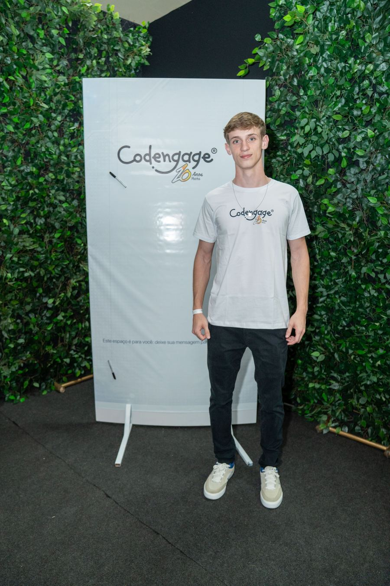

Linguagens
Ruby · Java · JavaScript · Python · SQL
Portfólio dev
Desenvolvedor full-stack: Ruby on Rails, Java/Spring, Next.js/React e Python/IA. Do componente reutilizável ao SaaS em produção com pagamentos, mensageria e integrações.

Sou desenvolvedor full-stack na Codengage. No dia a dia construo uma plataforma de gestão de licitações e um ERP para agências de viagens com gestão de milhas internacionais. Nos projetos próprios vou de Java/Spring a Next.js — sempre versionado no Git e publicado na web.
Ruby · Java · JavaScript · Python · SQL
HTML semântico · CSS (Flexbox/Grid, Mobile First) · React/Next.js · Tailwind
MVC · Rails · Spring Boot · FastAPI · APIs REST · JWT · webhooks · filas
PostgreSQL · Docker · Kubernetes · CI/CD
Atuação em produtos da empresa, do componente reutilizável à regra de negócio, com testes, code review e deploy contínuo.
Atuação atual: sistema web para gestão de licitações com cache, filas e atualizações em tempo real, CI, deploy conteinerizado e geração de documentos de licitação por serviço de IA.
Atuei em ERP com gestão de milhas internacionais: controle de saldos, regras de resgate, integrações com parceiros e leitura automática de e-mails para importar bilhetes de voo para o sistema.
Extensão que coleta preços de varejo direto nas páginas e envia ao sistema, com fila oportunista e instalação fora da loja.
Coleta de preços em sites com bloqueio de IP e páginas muradas: agenda à noite e delega a execução ao navegador do primeiro operador online — servidor primeiro, navegador como complemento — com filas, retentativas e descoberta dinâmica de fontes.
Painel com métricas, gráficos e acompanhamento em tempo real para decisão operacional.
Importação de tabelas oficiais com invariante de versão única: descartar a versão atual restaura automaticamente a anterior válida.
Assistente em etapas para elaboração de TR e minutas, com validação por etapa e geração do documento final.
Cadastro, perfis e permissões, autenticação em dois fatores e fluxos de recuperação e troca de senha.
Multi-tenant, pagamento com webhooks robustos, mensageria multi-provedor, notificações push e auth segura. Validado em produção com operações reais.
Gera o campo 2D automático a partir da captura do jogo para rádios sem direito de imagem: detecção de bola e jogadores com homografia para o campo, IA no PC da emissora sem GPU na nuvem e widget ao vivo por iframe com latência abaixo de 400ms.
Lê atividades, gera conteúdo com IA, formata documentos e submete. Open source.
Conversor com cotação oficial do Banco Central, 100% front estático publicado na web.
Contato para propostas, parcerias e dúvidas técnicas.